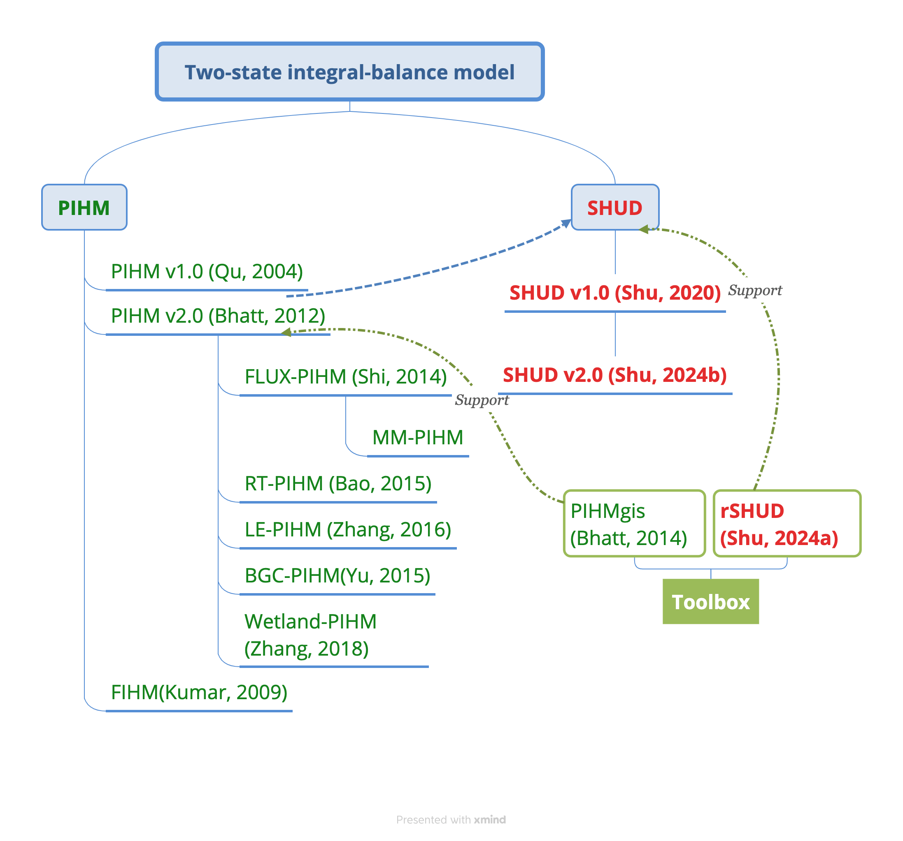

Chapter 1 绪论
1.1 水文模型
科学模型是集合人类对自然规律的认识，并通过已知变量计算时空上未知变量的数学方法。人类无法通过观测手段获取任意时间、任意地点、所有关心的水文变量，仅可获取特定时间和地点内有限的变量，这归咎于观测手段的局限性以及观测手段时空覆盖能力的限制，更重要的是人类缺乏观测未来的手段，因此人类需要一种手段：依据有限时空内的观测，体现和验证对自然运动规律的认知，并以此推算无限的空间（无观测区域）和时间（过去与未来）上所关心的变量（Beven, 2012; Savenije, 2010）。
水文模型集合了人类对水循环机理的理解，利用数学公式表达水的时空运动规律，既可以结合观测数据来验证理论的可靠性与适宜性，也可预测未来可能的发展趋势；即实现理解自然与预测自然的目的（任立良等, 2011；Peel和McMahon, 2020；Duffy，2017; Vallis, 2016; Wagener等, 2010; Fatichi等, 2016）。水文模型是高效且经济的科学试验工具，不仅能够结合现场观测数据来验证科学理论、指导科学观测网络布局（Li等，2018a；Blöschl等，2019; Beven, 2012），也在实践中对农业生产、水资源管理、污染物控制、社会经济发展关键决策有不可或缺的支撑作用（任立良等,1996；徐宗学, 2010；汤秋鸿等, 2019; Fatichi等, 2016；Zheng等，2010；Yu等，2020；Li等,2018b）。

在流域尺度的水文模型需要表达诸多个物理过程（图1）：落（降雨-截留）、入（入渗）、穿（土壤和岩石等孔隙介质中水沿各个方向的饱和与非饱和流动）、蒸（蒸腾、蒸发）、流（径流）；总结为“落-入-穿-蒸-流”五个过程。 其中还需考虑人类活动、不同的土地利用和土地覆盖对于水文过程的影响。在高寒地区，冰川、冻土和积雪要素导致的水分相变过程更为复杂，且相变影响原有的山坡水文过程（杨大文等, 2018；王磊等，2014）。 水文过程在微观的时空尺度上，表现出极高的复杂性和异质性特征；由于小尺度复杂性的平均效应，在宏观尺度上水文过程的复杂度反而较低，因此大尺度水文模型的水流过程描述更为概念化，其水流过程和计算的复杂度也较低（Peel和McMahon, 2020; Blöschl等, 1995, Grayson等, 1992; Wood等,1988; Savenije, 2001; Sivapalan 2003a）。
尽管水文模型数量众多，但新的水文模型依然层出不穷；这表明现有水文模型尚无法满足复杂多变的水问题研究和工程应用。Peel和McMahon（2020）对比总结了279个降雨径流模型，并引述Clark等（2011）评论：“模型数量之多表明，流域尺度上，环境动态过程的科学理解依旧不充分，可能归咎于现阶段在测量和表达自然系统异质性上的困难”。 水文模型发展上存在对于“正确道路”的争论（Clark等，2017; Sivapalan，2003a, 2003b; Semenova和Beven，2015），主要关注点在：（1）水文过程的合理参数化；（2）数据限制；（3）不确定性和（4）计算资源限制。水文模型发展存在着相互矛盾、相互竞争的两种需求，即降低模型复杂度的要求与精细表达水文物理过程的要求，这两个需求下水文模型分为概念性和物理性、自上而下与自下而上的模型分类（任立良等，1996；Vallis 等，2016, Clark等，2017；Sivapalan等，2003a，2017；Novotny，2018; Wagener等, 2004; Franchini和Pacciani, 1991; Saveniji, 2010）。
自上而下（Top-down）建模思路由长期、大尺度的流域水文响应作为出发点，逐步深入，对小尺度具体物理过程进行复杂化和细化模拟。流域计算单元被概念化为想象的存储空间——即“水桶模型”，计算单元上的驱动要素（降雨、气温、辐射等）与流域响应（通常为径流）表达为简单经验关系、线性/非线性关系、多元共线拟合关系。基于水桶概念的水文模型关注地表产汇流过程如何在河流断面上形成径流过程线，简化水在坡面和河道内的流动过程以及地表-地下水之间的双向交互，对产汇流和基流过程描述都具有明显的概念化特征。然而，自然流域内地表水和地下水交互频繁，交互界面的水流动方向和强度随水力梯度关系而变化（王文科等，2007, Maxwell等，2005，2016; Sulis等, 2012; Winter, 1999; Mukherjee等, 2018; Krause等, 2014; Levine和Salvucci, 1999）。
自下而上（Bottom-up）建模思路，从微观的计算单元和最基础物理公式出发，集合所有计算单元的水文过程，形成对整体流域长时间大范围的水文响应；这类模型也被称为基于过程或者基于物理的模型。其计算单元是流域上表达空间异质性所需的小尺度、可任意分割的地块；由（质量、能量、动量）守恒定理构建基础控制方程，利用微观尺度的物理方程（如达西定律、理查兹方程、圣维南方程、对流—扩散方程等）描述水文过程，采用数学或数值方法在高时空分辨率上计算水和能量在三维空间的存储、运动与转换过程，通过集合微观物理过程反应整体流域尺度的水文响应。需要强调的是构建这类水文模型基础的物质/能量守恒与水热传输定理（如达西定律）等能够脱离单个模型而独立存在，且能够被物理实验证实，因此其参数也具有明确物理意义，可直接使用测量的参数值（Li等，2018a；Beven 1989; Ntona等, 2022；Fatichi等, 2016）。
Hrachowitz和Clark（2017）总结了流域水文模型的空间和物理过程特征（图2），其背景坐标系是“分辨率—物理过程复杂度”构成的二维连续空间，横坐标反映了水文模型中最小水文计算单元的数量，即模型对流域空间异质性表达的精细程度；纵坐标表示物理过程的复杂程度。图2中，SWAT和VIC为代表的传统水文模型偏于左下方（空间分辨率低、以子流域/水文响应单元为最小计算单元，水流物理过程相对简单），属于自上而下模型。图2右上角的17-23模型是典型的地表-地下过程耦合的数值水文模型，具有极高的空间分辨率和更高数量级的计算单元数量，更精细地表达水文的物理过程和空间异质性；其产流机制随时间空间变化，突破了传统水文模型中固化的饱和/超渗产流机制。
地表-地下过程耦合的数值水文模型（Integrated Surface-Subsurface Hydrological Model with a Numeric Method）的物理过程描述更接近自然界水的运动，也更准确反映人类活动影响，并且易于耦合其他（水热耦合、污染物传输、植被生态等）物理过程，成为近几十年来水文模型新兴且重要的发展方向，也获得广泛关注（束龙仓等，2022；胡立堂等，2007；王蕊等，2008; Ntona等, 2022; Maxwell等2014; Paniconi和Putti 2015; Hrachowitz和Clark, 2017; Peel和McMahon, 2020）。2000年以来，全球水文研究者新发展了20多个重要的数值水文模型。
1.2 数值水文模型
地表-地下过程耦合的数值水文模型起始于20世纪70年代, Freeze和Harlan（1969）提出了基于水动力偏微分物理方程的模拟方法和统一地表—地下水文过程的模型蓝图（Freeze和Harlan, 1969; Cooley 1971）, 但由于当时计算技术的客观限制，直到上世纪80年代SHE（Abbott等, 1986）模型出现，数值水文模型才崭露头角。 数值水文模型既有别于数值方法求解的地下水模型（如ModFlow（McDonald和Harbaugh, 1984; Niswonger等, 2011）），也不同于地表-地下水过程概念化的传统水文模型。地下水模型常采用数值方法，但关注点在地表以下数十米至数百米的空间，其中包括地层、裂隙水等过程，超出水文模型所关注的“降雨-径流”范畴；同时地表水过程简化为地下水运动的边界条件。传统水文模型中地下水模块不具有实际含义的地下深度，而利用概念化的水桶模型反映地下水补给-存储-释放过程，例如新安江模型（赵人俊和王佩兰, 1988）、VIC（Liang等, 1994）和WRF-Hydro模型（Gochis等, 2013）的释水曲线（Savenije, 2001）。
数值水文模型（图3），属于分布式水文模型中的一个特殊类别，将地表-地下水文物理过程利用数值方法紧密耦合起来。数值方法本质上是对离散（非连续）时空单元中水头分布和变化的近似数值解的描述，从理论的解析解到数值解虽然损失了精度，但解析解通常无法求得，而数值方法可给出误差可接受的近似解。
![图3：地表-地下过程耦合的数值水文模型在整体水文模型谱系中的位置。图中蓝色斜体文字是该类别代表性模型。图中模型分别为：新安江（赵人俊和王佩兰, 1988），Unit Hydrograph（Sherman， 1932）, HBV（Bergström，1992）, FLEX（Gharari等,2014）, Topmodel（Beven和Kirkby, 1979），SWAT（Arnold等, 1998），VIC（Liang等, 1994）, PRMS（Leavesley等，1983）, WRF-Hydro（Gochis等, 2013），WEP（Jia等,2001），GBHM（Yang等，1998），GSFlow（Markstrom等, 2008）, GSFLOW-SWMM(Tian等，2015)，SWAT-MODFLOW（Park等,1996）, FEFLOW-3D（Hu等，2020）, SHUD（Shu等, 2020）, PIHM（Qu和Duffy,2007）, PARFLOW（Kollet和Maxwell, 2006）, PAWS（Shen和Phanikumar, 2010）, HydroGeoSphere（Aquanty Inc. 2013），CATHY（Bixio等, 2002; Camporese等 2010）.](Fig/overview/HydrologicalModelMap.001.png)
1.2.1 数学模型
数值模型使用物质和能量守恒公式作为控制方程（Governing equation）显式地描述流域的地表水和地下水储量与流量关系，通常使用某种形式的理查兹方程（公式2）和圣维南方程（公式3）来分别计算地下和地上水流过程（Freeze和Harlan, 1969; Haque等, 2021; Maxwell等, 2016; Farthing和Ogden, 2017; Singh, 2018）。各种数值水文模型的核心控制方程基本相同，但其简化程度和求解方案不同，分别对地表、地下水的不同过程采取一维、二维和三维的不同简化方法。
流域水文的基本控制方程可写为： \[\frac{\partial h}{\partial t}=\nabla \cdot(v h)-\frac{Q_e}{A}+\frac{Q_{s u}}{A}\]
\[Q=\frac{1}{n} A R^{2 / 3} s^{1 / 2}\]
\[S_w(h) \frac{\partial h}{\partial t}=\nabla \cdot \boldsymbol{q}+\frac{Q_e}{V}+\frac{Q_{s s}}{V}\]
\[q=-k_e(h) \nabla(h+z)\]
公式（1）和（3）分别是地表水和地下水的控制方程。其中，
- h为地下水水头高度、非饱和层的含水量、或地表水高度[L]；
- t为时间[T]；
- v为地表水水平平均流速[\(LT^(-1)\)]；
- Q_e为地表与地下交互流量[\(L^3 T^(-1)\)]，从地表至地下流量为正；
- Q_su为地表水的源汇项或者边界条件[\(L^3 T^(-1)\)]，可包括降雨、灌溉、蒸散发等过程；
- A为控制单元的垂直投影面积[\(L^2\)]；
- n为曼宁系数[\(TL^(-1/3)\)]，R为水力半径，即过水面积与湿周之比[\(L\)]，S_f为摩擦坡度[\(LL^(-1)\)]。S_w (h)是储水系数[\(L^3 L^(-3) L^(-1)\)]，即单位水头下降时单位体积内可释放的水量，包含了地下水的储水系数[\(L^(-1)\)]和非饱和土壤层的含水量[\(LL^(-1)\)]; q为地下水径流量[\(L^3 L^(-2) T^(-1)\)]，是水头高度或含水量的函数，采用达西定律或理查兹方程（公式4）计算；
- Q_ss为地下水或土壤水的源汇项或者边界条件[\(L^3 T^(-1)\)]，实际计算中可包含单位面积地下水渗漏、注入、抽取以及蒸散发等流量；
- V为控制单元的体积[\(L^3\)]；
- K_e (h)为有效水力传导度[\(LT^(-1)\)]，是土壤含水量或基质势的函数；
- z为距离某一基准面的垂直距离[\(L\)]；
- v公式中q和v的计算分别依据曼宁公式（公式2）和理查兹方程（公式2）。
流域尺度的地表—地下过程耦合计算基于水头连续性和地表—地下间水量交换\(Q_e\)。公式（3）是地下水水量平衡公式的出发点，左边是单位水头/水位线变化引起的控制体水量变化，右边是达西定律/理查兹公式计算的渗流量、地表-地下交互量、源汇项之间的差值。
流域水文还需要对地表过程，即积雪融化和蒸散发进行模拟，实际模型计算时归入源汇项。冰川、积雪和蒸散发通常作为模块与地表和地下水文过程进行松散耦合，即计算的时间步长不同，或者无需迭代计算。土地利用、农业活动等过程在模型中以改变水力学参数的形式展现其对水文和陆面过程的影响。
数值方法的边界条件通常分为Dirichlet和Neumann两类。Dirichlet边界条件（Dirichlet Boundary Condition, DBC）是常/偏微分方程的第一类边界条件，也称为固定边界条件，其指定了空间某点的固定值。例如，在地下水流动问题中，Dirichlet边界条件限定固定地下水水头高度。纽曼边界条件（Neumann boundary condition, NBC） 也被称为常/偏微分方程的“第二类边界条件”，其给定空间特定位置上目标变量的一阶导数。在地下水流动问题中，给定某点处固定流量，如注水或者取水流量。作为三维的数值水文模型，两类边界条件都可以施加在空间任意位置的任意方向上。数值水文模型中存在常见的边界条件或者假设，其中包括： 流域底部不透水边界，属于NBC，其流量为零。此假设适用于大部分流域的水文研究。当需要体现深层地下水对模拟系统影响时，可以设定系统非零底部边界条件，实现与深层地下水的交互。 封闭的流域边界，即流域在坡面单元的地表和地下水的水平方向上不接受来自外部的水量，也不向外部流失水量——边界上的HCU与域外的流量为零。当模拟对象边界是流域边界，且地表水和地下水的流域边界一致时，此假设完全成立。当模拟域为流域一部分（例如河漫滩研究）时，则需要专门设定DBC或者NBC，来确保域内水量平衡。但实际应用中边界条件难以通过观测获取，因此替代办法是扩大模拟域——扩大模拟域直至零流量的流域边界。在重点研究区采用精细网格，研究区边界至流域边界范围采用较粗网格，即可以保证研究区边界条件合理，同时避免边界的观测数据的掣肘。 流域顶部边界。流域上层边界，流域顶部的边界条件实际上为降雨和灌溉，作为NBC施加在流域上。数值水文模型通常将蒸散发也作为NBC作用于地表和地下，但是蒸散发作为边界条件不是外部输入，而是根据气象驱动和土壤温湿度计算而来。 河流出口边界。河流出口是流域唯一的水平方向水量出口，因此水文模型都符合质量守恒定律或水量平衡公式：\(\Delta S = P - ET -Q\)，\(\Delta S\)为流域水储量，\(P\)为降雨量，\(ET\)为蒸发量，\(Q\)为径流量。
1.2.2 数值方法求解
从控制方程（公式1和3）可知目标变量h是随时间t和空间变化的函数，因此数值方法需要在时间和空间上对目标对象进行离散化。三维流域空间进行水平和垂直离散化，是数值模型必经步骤。好的空间离散化方案不仅要满足研究区域的模拟精度、满足边界条件限制，同时要减少计算单元数量以降低对计算资源的依赖性。水平空间离散化方案，通常分为结构化和非结构化方案，模型对比一节将仔细讨论。垂直方向上，主要是针对土壤层进行划分，由地表划分至底部不透水边界；垂直方向的离散化方案非常灵活，存在距离等差、等比或者任意划分，也可以通过饱和或非饱和层进行划分。 数值方法可分为显式求解（Explicit method）与隐式求解（Implicit method）：当下一时刻变量由前一时刻变量直接计算得到的，称为显式求解法；当下一时刻变量由一系列公式、矩阵或者迭代算法计算得到，称为隐式求解法。相同时空分辨率条件下，显式求解法的计算速度显著高于隐式求解法，但是隐式求解法可以保证计算的稳定性，因此可采用较大时间步长进行计算，而显式求解法必须受制于CFL条件。CFL条件是保证数值方法收敛性和稳定性的必要条件（非充分条件），以Courant，Fredrichs和Lewy共同命名（Courant等 1928）。 CFL条件即数值方法的时间步长要足够小，方能够保证计算精度，否则结果不收敛或者不稳定。 时间离散化即模型时间步长。时间步长和空间分辨率的组合关系，对于数值方法求解的稳定性和收敛性都有显著影响。CFL条件是限制因素。为保证数值方法稳定性，空间分辨率越高，则要求时间分辨率也越高，时间分辨率与空间分辨率的（一次或多次）幂存在正比关系。
1.3 SHUD模型
水文非结构域模拟器(Simulator for Hydrologic Unstructured Domains, SHUD - 音“数得”) 是一个多过程、多尺度、数值方法、地表-地下全耦合、分布式水文模型(Shu, Ullrich, and Duffy 2020)。模型使用了有限体积法(Finite volume method, FVM)求解水文常微分方程。
rSHUD 是一款以R库开发的开源GIS和水文分析的工具集，用于支持SHUD和其他类似水文模拟。依托强大的R库，rSHUD的功能可分为：空间数据处理与分析，全球开放地理数据获取，SHUD数据前处理，SHUD数据后处理，水文数据分析，二维/三维数据可视化等。
SHUD和rSHUD共同组成了SHUD模拟系统。SHUD模型系统的网站为https://www.shud.xyz。用户可通过SHUD网站关注SHUD模型的发展、更新、应用和近期新闻，也可以通过网站获取源代码。
1.3.1 站在巨人的肩上
首先，SHUD模型基于Christopher Duffy教授在1996年提出的“两态集成平衡”(two-state integral-balance)概念模型(Duffy 1996)，以及PIHM(Penn State Integrated Hydrologic Model)模型Bhatt (2012)的设计和应用经验。“两态集成平衡”理论将土壤水层分为未饱和和饱和层，并使用局部平衡公式计算水流。
SHUD和PIHM都是多尺度、多过程、数值方法、地表-地下全耦合、分布式水文模型。 继承和PIHM中“两态集成平衡”概念模型思想，并吸收PIHM应用中的经验，舒乐乐(2020)全新开发了SHUD模型。SHUD的源代码全部为新代码，防止代码继承而引入旧漏洞，并且在模型中的流域拓扑结构、数据结构、算法、公式应用、迭代过程、输入输出等方面有较大改进（文后会详细列举）。因此，SHUD由PIHM发展而来，但与PIHM已经在概念、结构、计算和格式上完全不兼容，应作为另一个独立模型看待。
1.3.2 PIHM模型简史
Duffy于1996年构建了计算土壤水和地下水动态的“二态集成平衡”模型(Duffy 1996)；该模型中，垂直方向分为饱和与非饱和层，局地水量平衡公式集成计算水的交换。“二态集成平衡”模型在简化水文动态的同时，保留了自然中时空尺度对产流的响应。 之后Brandes 和Duffy 等 (Brandes, Duffy, and Cusumano 1998) 继承了“二态集成平衡”模型并使用FEMWATER实现了数值方法计算山坡-河流尺度上水双向交互。 2004年，曲轶众(Qu 2004)在算法中加入了蒸散发过程和河道计算，并发布了Penn State Integrated Hydrologic Model (PIHM)——PIHM的1.0版本，是PIHM发展中最重要的里程碑，从此PIHM成为流域模拟的通用研究工具应用在不同尺度的流域中。
此后， Kumar， Bhartt和Duffy (Mukesh Kumar 2009; Mukesh Kumar, Duffy, and Salvage 2009)) 相继开发了PIHM v2.0和PIHMgis。 PIHM v2.0增强了模型中陆面过程和土地利用影响水文过程的计算过程。Gopal Bhartt 开发了生成PIHM输入、读取输出和分析结果的软件PIHMgis。PIHMgis分别出现了PIHMgis v2.3和v3.0两个常用版本，PIHMgis v2.3使用了QGIS内核，因此在部分平台上更新困难。 PIHMgis v3.0的支持性更好，可支持Mac或Windows操作系统。(Leonard and Duffy 2013) 开发了HydroTerre平台，为PIHM和其他水文模型提供基础的空间和时间数据。 PIHMgis和HydroTerre的出现极大地推动了PIHM模型在全美和全球的应用。
受益于PIHM模型的诸多优势，PIHM家族出现了若干耦合模型。 例如，Flux-PIHM将NOAH陆面过程模型与PIHM模型耦合，更精确地计算陆面与大气的能量交换、 蒸散发和积雪 (Shi, Baldwin, et al. 2015; Shi et al. 2014)。张宇等(Zhang, Slingerland, and Duffy 2016) 开发了LE-PIHM, 模型万年尺度由水文过程造就的地形地貌变化。 RT-PIHM 和 RT-Flux-PIHM(Bao 2016; Bao et al. 2017)实现了化学反应与PIHM水文过程的耦合。由石宇宁领导的研究正试图将各种PIHM相关模型作为模块统一建立多模块PIHM系统（Multi-Module PIHM， MM-PIHM， https://github.com/PSUmodeling/MM-PIHM）。 除此之外，仍有多个与PIHM耦合的研究正在进行，如与湖泊、农业、经济的耦合研究。
在PIHM模型快速发展的同时，Kumar(Mukesh Kumar 2009)，在PIHM v2.0基础上设计了 Finite volume-based Integrated Hydrologic Modeling (FIHM)模型，使用二阶精度和三维流动模拟水文过程。
下图展示了PIHM模型的发展和分支：  Figure 1: PIHM和SHUD模型的发展和分支。 PIHMgis和rSHUD分别是支持PIHM和SHUD的数据前后处理工具。 PIHMgis使用C++写成，rSHUD使用R.
1.3.3 重要时间线
- 2005 PIHM v1.0
曲轶众 (Qu and Duffy 2007; Qu 2004)在宾州州立大学博士期间，于其博士论文中基于“两态集成平衡”理论，开发并验证了PIHM模型。 此版本作为PIHM v1.0出现，成为PIHM模型的核心。
- 2009 PIHMgis
Gopal Bhartt博士 (Bhatt 2012) 使用C++和Qt库建立了PIHMgis工具。PIHMgis在Qgis平台上实现了空间数据前处理、模型运行、结果数据分析的功能，有效地降低了初学者的使用门槛，极大地推动了模型的应用。
- 2015 MM-PIHM
Yuning Shi博士领导和开发了MM-PIHM (Multi-Module PIHM)模型平台——集成并融合了PIHM家族的若干耦合模块。 诸如RT-PIHM, LE-PIHM, flux-PIHM, BGC-PIHM等等。 得益于科学家们的周密合作，MM-PIHM的多学科耦合实践很好地证明和实现了PIHM最初作为科学社区模型的理念。
- 2020 SHUD
舒乐乐博士继承了PIHM的理念和经验，开发了SHUD模型(Shu, Ullrich, and Duffy 2020)，并开发了支持SHUD模型数据前后处理、空间数据分析、模型自动校准、结果可视化的全套工具集。SHUD建模系统支持可重复、高效、全自动部署于全球大部分流域。
- 2022 SHUD v.2.0
SHUD研究组https://shud.xyz/并加入了湖泊模块吗，进一步完善了SHUD模型代码。v2.0的代码与v1.0并不完全兼容，且输入输出文件的格式有较大改进。本文内容以SHUD内容都是基于SHUD最新版本。
1.3.4 SHUD与PIHM的区别
SHUD模型是PIHM的一个继承者，继承了1996年由Duffy提出的二相耦合概念模型，并且继承了部分PIHM 1.0和2.0当中的成熟经验。之后作者修改了模型中部分过程、计算和实现语言，SHUD模型已经与PIHM模型不再兼容，因此使用新名称对模型进行命名。
SHUD与PIHM的区别：
- SHUD使用C++面向对象编程，将计算封装起来，避免内存泄露等PIHM常见问题。
- SHUD使用了不同的坡面与河道的交互。PIHM中河道与两个三角形坡面相邻，带来了四个问题：1） 河道的长度极大的影响和模型的计算单元数量，用户不得不在简单河道和计算单元数量之间做权衡。2） 平原地区的河道绵延曲折，导致大量微小三角形单元和非结构三角形，使得模型计算容易突破库容常数而使得模型变慢。3）容易出现局部积水点（sink），个别积水点就可以极大地拖慢整个流域的求解速度。 4）为解决以上问题，模型用户需要反复手动对河流形状进行修改，降低了模型的可重复性和效率。SHUD的河道覆盖在三角形单元之上，坡面和河道水量交换给予河道水位和地下水、地表水的坡度计算，整体计算效率显著提升。
- SHUD模型中计算入渗、地下水补给和河流交互的公式与PIHM不同。公式的采用基于经验和模型设计时的需求。未来将会就此进行模型对比，展示两个模型的差异。
- SHUD模型确保了计算中的水量平衡。
在技术层面SHUD模型：
- 支持CVODE 5.0及以上版本
- 支持OpenMP并行计算
- 采用和与PIHM不同的数据结构和算法
- 支持可读性强地输入和输出文件
- 统一的时间序列数据操作
- 指定步长输出模型状态，作为后续模型运行的初始条件。
- 自动检查模型的输入数据和参数的有效性
- 加入模型调试选项，监控每一步长内的非法值和内存操作。
1.4 SHUD模型的特点
- SHUD模型是一个物理性分布式水文模型，精确描述流域水文物理过程。物理性模型可用于无观测流域的模拟研究。
- SHUD表达了流域中的空间异质性。水文空间异质性的表达有利于耦合模型研究，例如详细描述了水从山坡回流的路径，有利于生物化学、污染物运动、地貌变迁、湖泊生态等等方面的耦合研究。
- SHUD是全耦合模型，在每一时间不步长所有水文状态量都要满足基本求解器的收敛性要求，保证了水文便利在空间上的连续性、一致性和收敛性。
- SHUD模型使用CVODE 5.0+(Hindmarsh et al., 2005) 作为常微分方程求解器。 CVODE由劳伦斯利弗莫尔国家实验室开发和维护。
- SHUD可使用灵活的时间和空间步长，适应多种尺度的模拟需求。
- SHUD支持高空间时间分辨率的洪水模拟，也支持长时间序列的气候和土地利用变化研究。
- SHUD是开源模型，任何人（非商业用途）都可使用、修改此模型。
1.5 参考文献
当利用SHUD模型从事科研工作时，请依次合理引用以下三篇文章：
L. Shu, P. A. Ullrich, C. J. Duffy, Simulator for Hydrologic Unstructured Domains (SHUD v1.0): numerical modeling of watershed hydrology with the finite volume method. Geosci. Model Dev. 13, 2743–2762 (2020).
Y. Qu, C. J. Duffy, A semidiscrete finite volume formulation for multiprocess watershed simulation. Water Resour. Res. 43, 1–18 (2007).
C. J. Duffy, A Two-State Integral-Balance Model for Soil Moisture and Groundwater Dynamics in Complex Terrain. Water Resour. Res. 32, 2421–2434 (1996).
以下为时间排序的SHUD相关研究文章：
- Shu, Ullrich, and Duffy (2020)
- Shu, Ullrich, et al. (2024)
- Shu, Li, et al. (2024)
- Shu, Chen, et al. (2024)
- 舒乐乐 et al. (2024)
- Chang et al. (2024)
- Qu (2004)
- Qu and Duffy (2007)
- Li (2008)
- M. Kumar, Duffy, and Reed (2004)
- Mukesh Kumar, Bhatt, and Duffy (2009)
- Yu et al. (2015)
- Yu et al. (2014)
- Li and Duffy (2011)
- Shi, Baldwin, et al. (2015)
- Shi, Davis, et al. (2015)
- Bhatt, Kumar, and Duffy (2014)